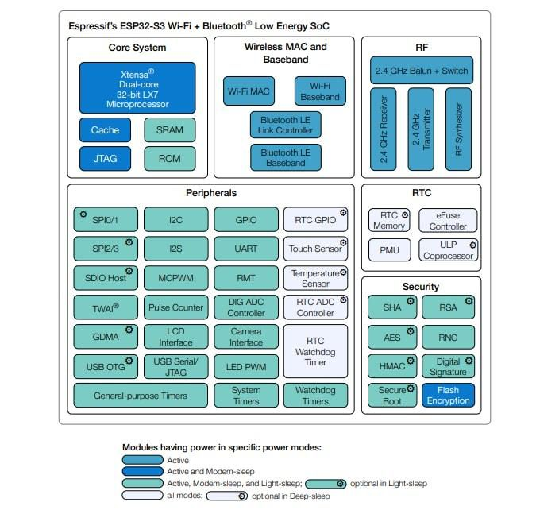
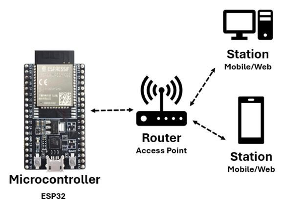
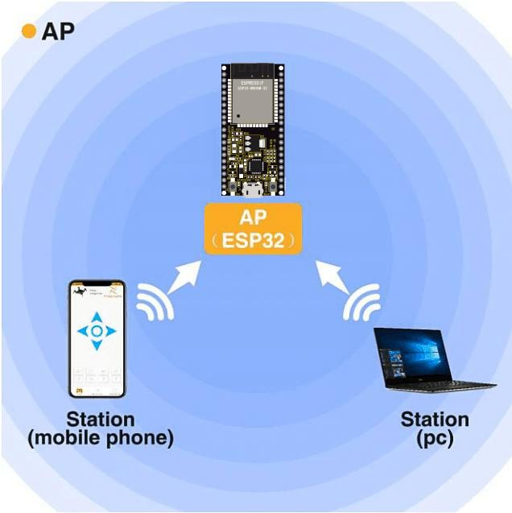
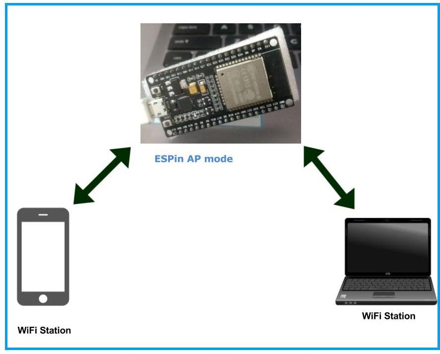

第十六课：XIAO ESP32S3 网络通信系统——Wi-Fi、TCP/IP、HTTP、MQTT 与 WebSocket
前面我们已经掌握了 ESP32-S3 的硬件、FreeRTOS、DMA、音频、图像和边缘 AI。现在要解决一个关键问题：
如何让 XIAO ESP32S3 稳定地与 Mac、手机、局域网服务器以及云端 AI 服务通信？
本课仍然以普通版 Seeed XIAO ESP32S3 为主控，采用 ESP-IDF 开发。
完成本课后，你应该能够独立设计一个具备 Wi-Fi 自动重连、HTTP 接口、MQTT 消息通信和 WebSocket 实时传输能力的嵌入式网络系统。
一、先理解完整的网络通信架构
网络通信可以分成四层来理解：
| 层次 | 技术 | 作用 |
|---|---|---|
| 无线连接 | Wi-Fi | 连接无线局域网 |
| 网络层 | IP | 设备寻址和数据包转发 |
| 传输层 | TCP / UDP | 端到端数据传输 |
| 应用层 | HTTP / MQTT / WebSocket | 实现业务功能 |
这四层的关系非常重要。
例如，HTTP 不是直接操作 Wi-Fi 天线，而是通常建立在 TCP/IP 之上。
二、ESP32-S3 的 Wi-Fi 硬件原理
ESP32-S3 支持 2.4GHz Wi-Fi，主要用于连接 IEEE 802.11 b/g/n 无线网络。
它不能直接连接仅支持 5GHz 或 6GHz 的无线网络。

1. Wi-Fi 数据如何发送？
简化流程：
应用程序
↓
TCP/IP 协议栈
↓
Wi-Fi 驱动
↓
MAC 层
↓
PHY 物理层
↓
射频电路
↓
天线
↓
无线路由器其中：
MAC 层负责无线帧的组织、地址和媒体访问控制。
PHY 层负责调制、编码和无线信号收发。
射频电路负责将数字信号转换为实际的无线电信号。
2. Wi-Fi 为什么会丢包？
无线环境存在很多干扰因素：
- 信号衰减；
- 其他 2.4GHz 设备干扰；
- 路由器拥塞；
- 墙体遮挡；
- 天线方向；
- 设备供电不稳定；
- Wi-Fi 省电机制带来的调度变化。
所以嵌入式网络程序必须考虑断线、重试和超时。
不能假设 Wi-Fi 永远在线。
三、STA、AP 和 AP+STA 模式
ESP32-S3 主要支持以下 Wi-Fi 工作方式。



实际项目如何选择？
| 项目 | 建议模式 |
|---|---|
| 传感器数据上传 | STA |
| 智能语音终端 | STA |
| 手机首次配置设备 | AP 或配网机制 |
| 无路由器的本地控制 | AP |
| 设备配置和联网同时运行 | AP+STA |
对于我们的 XIAO ESP32S3 项目，建议先掌握 STA，再学习 AP 配网。
四、ESP-IDF Wi-Fi 软件架构
在 ESP-IDF 中，Wi-Fi 不是一个简单的 connect() 函数。
它涉及多个组件。
app_main()
│
├── NVS
│
├── esp_netif
│
├── Event Loop
│
├── Wi-Fi Driver
│
└── Application Tasks1. NVS
NVS 是非易失性存储系统。
Wi-Fi 驱动和应用程序可能需要保存配置数据。
2. esp_netif
esp_netif 是 ESP-IDF 的网络接口抽象层。
它负责将 Wi-Fi 网络接口与 TCP/IP 协议栈连接起来。
3. Event Loop
事件循环负责通知应用程序：
- Wi-Fi 已启动；
- Wi-Fi 已连接；
- Wi-Fi 已断开；
- IP 地址已获取。
4. lwIP
lwIP 是轻量级 TCP/IP 协议栈。
它实现了大量网络协议功能，例如：
- IPv4；
- IPv6；
- TCP；
- UDP；
- ICMP；
- DNS；
- DHCP 相关功能。
ESP-IDF 的 Socket API 就建立在相应网络协议栈能力之上。
五、实战一：使用 ESP-IDF 连接 Wi-Fi
我们先实现一个最基础的 STA 工程。
1. 工程目录
wifi_basic/
├── CMakeLists.txt
├── main/
│ ├── CMakeLists.txt
│ └── app_main.c
└── sdkconfig2. Wi-Fi 初始化代码
下面使用 ESP-IDF 5.x 风格的 API，演示连接流程和事件处理。
#include <string.h>
#include "freertos/FreeRTOS.h"
#include "freertos/task.h"
#include "freertos/event_groups.h"
#include "esp_wifi.h"
#include "esp_event.h"
#include "esp_netif.h"
#include "esp_log.h"
#include "nvs_flash.h"
#define WIFI_SSID "YOUR_WIFI"
#define WIFI_PASS "YOUR_PASSWORD"
#define WIFI_CONNECTED_BIT BIT0
static const char *TAG = "WIFI";
static EventGroupHandle_t wifi_event_group;
static void wifi_event_handler(
void *arg,
esp_event_base_t event_base,
int32_t event_id,
void *event_data
)
{
if (event_base == WIFI_EVENT) {
if (event_id == WIFI_EVENT_STA_START) {
esp_wifi_connect();
}
else if (event_id == WIFI_EVENT_STA_DISCONNECTED) {
ESP_LOGW(TAG, "Wi-Fi disconnected");
xEventGroupClearBits(
wifi_event_group,
WIFI_CONNECTED_BIT
);
esp_wifi_connect();
}
}
else if (
event_base == IP_EVENT &&
event_id == IP_EVENT_STA_GOT_IP
) {
ip_event_got_ip_t *event =
(ip_event_got_ip_t *)event_data;
ESP_LOGI(
TAG,
"IP: " IPSTR,
IP2STR(&event->ip_info.ip)
);
xEventGroupSetBits(
wifi_event_group,
WIFI_CONNECTED_BIT
);
}
}
void wifi_init_sta(void)
{
wifi_event_group = xEventGroupCreate();
configASSERT(wifi_event_group != NULL);
esp_err_t err = nvs_flash_init();
if (err == ESP_ERR_NVS_NO_FREE_PAGES ||
err == ESP_ERR_NVS_NEW_VERSION_FOUND) {
ESP_ERROR_CHECK(nvs_flash_erase());
err = nvs_flash_init();
}
ESP_ERROR_CHECK(err);
ESP_ERROR_CHECK(esp_netif_init());
ESP_ERROR_CHECK(
esp_event_loop_create_default()
);
esp_netif_t *sta_netif =
esp_netif_create_default_wifi_sta();
configASSERT(sta_netif != NULL);
wifi_init_config_t cfg =
WIFI_INIT_CONFIG_DEFAULT();
ESP_ERROR_CHECK(esp_wifi_init(&cfg));
ESP_ERROR_CHECK(
esp_event_handler_register(
WIFI_EVENT,
ESP_EVENT_ANY_ID,
wifi_event_handler,
NULL
)
);
ESP_ERROR_CHECK(
esp_event_handler_register(
IP_EVENT,
IP_EVENT_STA_GOT_IP,
wifi_event_handler,
NULL
)
);
wifi_config_t wifi_config = {
.sta = {
.ssid = WIFI_SSID,
.password = WIFI_PASS,
.threshold.authmode =
WIFI_AUTH_WPA2_PSK
}
};
ESP_ERROR_CHECK(
esp_wifi_set_mode(WIFI_MODE_STA)
);
ESP_ERROR_CHECK(
esp_wifi_set_config(
WIFI_IF_STA,
&wifi_config
)
);
ESP_ERROR_CHECK(esp_wifi_start());
}
void app_main(void)
{
wifi_init_sta();
xEventGroupWaitBits(
wifi_event_group,
WIFI_CONNECTED_BIT,
pdFALSE,
pdTRUE,
portMAX_DELAY
);
ESP_LOGI(TAG, "Network ready");
}这段代码演示了 Wi-Fi 初始化、事件回调、获取 IP 和等待连接。
它还不是完整的产品级网络管理器。特别是断线后立即无限重连，在密码错误或路由器长期不可用时并不理想。
另外，示例中直接填写 SSID 和密码只是为了教学。实际项目应使用配置机制、NVS 或安全配网流程，不要将真实密码提交到 GitHub。
3. 编译与烧录
在 Mac 的 ESP-IDF 环境中：
idf.py set-target esp32s3
idf.py build
idf.py -p /dev/cu.usbmodemXXXX flash monitor实际串口名称需要根据 Mac 上识别到的设备确定。
4. 预期日志
I WIFI: Wi-Fi started
I WIFI: Connected to AP
I WIFI: IP: 192.168.1.105
I WIFI: Network readyIP 地址只是示例，实际由网络分配。
六、DHCP、DNS、IP 地址到底是什么？
这是很多嵌入式开发者容易混淆的知识点。
1. IP 地址
例如：
192.168.1.105这是设备在某个网络中的 IP 地址。
Mac 可能是：
192.168.1.20如果两者位于允许互相通信的网络中，就可以通过 IP 地址访问对方。
2. DHCP
DHCP 用于自动分配网络参数。
通常包括：
- IP 地址；
- 子网掩码；
- 默认网关；
- DNS 服务器。
3. DNS
DNS 负责将域名解析为 IP 地址。
例如：
example.com
↓
DNS 查询
↓
服务器 IP4. 网关
默认网关通常是路由器。
当 XIAO 需要访问其他网络中的服务器时，数据包一般需要通过网关转发。
七、TCP 和 UDP：两个最重要的传输协议
TCP
可靠、有序的字节流 适合 HTTP、MQTT、WebSocket 等应用。UDP
无连接的数据报 适合低延迟音频、设备发现及允许应用自行处理丢包的场景。1. TCP 为什么可靠？
TCP 通过：
- 序列号；
- 确认应答；
- 重传；
- 流量控制；
- 拥塞控制；
提供可靠、有序的字节流传输。
但 TCP 不保留应用消息边界。
例如发送两次：
HELLO
WORLD接收端可能一次读取：
HELLOWORLD也可能分多次读取。
因此使用 Socket 编程时，需要自己设计消息长度或分隔协议。
2. UDP 为什么适合部分实时音频？
因为 UDP 不要求传输层对丢失数据包进行可靠重传。
对于实时语音，过晚到达的旧音频可能已经没有播放价值。
但是 UDP 并不保证低延迟，也不保证到达、顺序或不重复。
实际系统通常还需要：
- 序列号；
- 时间戳；
- 抖动缓冲；
- 丢包统计；
- 必要的错误恢复。
3. 如何选择？
| 场景 | 推荐 |
|---|---|
| 配置设备 | TCP / HTTP |
| 传感器数据上传 | MQTT / TCP |
| 网页控制 | HTTP |
| 实时双向控制 | WebSocket |
| 实时音频实验 | UDP 或合适的实时传输方案 |
| 文件上传 | HTTP / TCP |
八、Socket 编程：网络通信的底层接口
Socket 可以理解为应用程序使用 TCP/IP 网络能力的接口。
一个典型 TCP 客户端流程：
socket()
↓
connect()
↓
send()
↓
recv()
↓
close()一个 TCP 服务器流程：
socket()
↓
bind()
↓
listen()
↓
accept()
↓
recv() / send()
↓
close()TCP 客户端示例
#include <string.h>
#include <unistd.h>
#include <sys/socket.h>
#include <arpa/inet.h>
#include "esp_log.h"
void tcp_client_example(void)
{
int sock = socket(
AF_INET,
SOCK_STREAM,
IPPROTO_IP
);
if (sock < 0) {
ESP_LOGE("TCP", "Socket creation failed");
return;
}
struct sockaddr_in dest = {
.sin_family = AF_INET,
.sin_port = htons(5000)
};
inet_pton(
AF_INET,
"192.168.1.20",
&dest.sin_addr
);
if (connect(
sock,
(struct sockaddr *)&dest,
sizeof(dest)
) < 0) {
ESP_LOGE("TCP", "Connection failed");
close(sock);
return;
}
const char *message = "Hello from XIAO";
ssize_t sent = send(
sock,
message,
strlen(message),
0
);
if (sent < 0) {
ESP_LOGE("TCP", "Send failed");
}
close(sock);
}这是最小演示。实际项目还需要处理部分发送、连接超时、断线恢复和 DNS 解析。
九、HTTP：让 Mac 浏览器直接访问 XIAO ESP32S3
HTTP 是非常适合嵌入式设备的应用协议。
例如：
GET /statusESP32-S3 返回：
{
"device": "XIAO ESP32S3",
"status": "online",
"temperature": 26.5
}1. HTTP 服务器架构
Mac 浏览器
↓
HTTP GET /status
↓
Wi-Fi
↓
ESP-IDF HTTP Server
↓
应用程序
↓
JSON 响应2. ESP-IDF HTTP Server
主要头文件：
#include "esp_http_server.h"一个简单的状态接口：
static esp_err_t status_handler(
httpd_req_t *req
)
{
const char *json =
"{\"device\":\"XIAO ESP32S3\","
"\"status\":\"online\"}";
httpd_resp_set_type(
req,
"application/json"
);
return httpd_resp_sendstr(req, json);
}注册接口：
httpd_uri_t status_uri = {
.uri = "/status",
.method = HTTP_GET,
.handler = status_handler,
.user_ctx = NULL
};启动服务器：
httpd_handle_t server = NULL;
httpd_config_t config =
HTTPD_DEFAULT_CONFIG();
ESP_ERROR_CHECK(
httpd_start(&server, &config)
);
ESP_ERROR_CHECK(
httpd_register_uri_handler(
server,
&status_uri
)
);这三个片段需要放在同一个完整工程中，确保服务器句柄和 URI 结构体的生命周期有效。
3. 在 Mac 上测试
假设 XIAO IP 为：
192.168.1.105打开浏览器：
http://192.168.1.105/status或者终端：
curl http://192.168.1.105/status即可查看设备状态。
注意：HTTP 明文接口适合受控局域网实验。不要未经身份验证和安全防护就将设备管理接口直接暴露到公网。
十、MQTT：物联网设备最常用的通信协议之一
MQTT 使用发布订阅模式。
与 HTTP 不同，设备不一定需要直接知道其他设备的 IP 地址。
1. Topic 是什么？
例如：
xiao/device01/temperature设备发布：
26.5Mac 订阅这个 Topic，就可以收到温度。
再例如：
xiao/device01/commandMac 发布：
{"led":true}XIAO 订阅后执行对应操作。
2. MQTT QoS
| QoS | 含义 |
|---|---|
| 0 | 最多一次 |
| 1 | 至少一次，可能重复 |
| 2 | 恰好一次，按协议交付语义 |
QoS 1 和 QoS 2 都不能代替应用层的命令去重、权限验证和状态确认。
3. MQTT 在 ESP-IDF 中如何使用？
ESP-MQTT 提供了客户端接口，例如：
esp_mqtt_client_handle_t client =
esp_mqtt_client_init(&mqtt_cfg);
esp_mqtt_client_start(client);连接成功后：
esp_mqtt_client_publish(
client,
"xiao/device01/status",
"online",
0,
1,
0
);实际使用前需要配置 Broker URI、认证信息、事件回调，并检查当前 ESP-IDF 工程是否已经引入兼容版本的 esp-mqtt 组件。
十一、WebSocket：适合实时双向数据通信
WebSocket 与普通 HTTP 请求响应不同。
建立连接后，客户端和服务器可以持续双向发送消息。
例如：
Mac
↕
WebSocket
↕
XIAO ESP32S3非常适合：
- 实时设备状态；
- 音频数据；
- 控制命令；
- 传感器波形；
- 实时日志；
- 网页控制面板。
HTTP 与 WebSocket 对比
| 项目 | HTTP | WebSocket |
|---|---|---|
| 典型交互 | 请求响应 | 持续双向通信 |
| 实时推送 | 需要额外机制 | 原生支持 |
| 连接方式 | 可以复用连接 | 长连接 |
| 适合 | 配置、查询、文件 | 实时状态和数据流 |
1. WebSocket 音频数据传输
结合第十三课：
INMP441
↓
I2S
↓
PCM Buffer
↓
WebSocket
↓
Mac例如每 20ms 发送 640 字节 PCM。
但必须考虑 TCP 背压和发送队列长度，否则网络慢时音频延迟可能不断积累。
十二、TLS：为什么联网设备需要加密？
如果通过普通 HTTP 发送：
Wi-Fi SSID
设备令牌
用户数据数据可能在不可信网络路径上被读取或篡改。
TLS 可以提供：
- 通信加密；
- 完整性保护；
- 服务器身份验证。
1. 常见协议
| 未加密 | 加密版本 |
|---|---|
| HTTP | HTTPS |
| MQTT | MQTT over TLS |
| WebSocket | WSS |
2. ESP32-S3 如何验证服务器？
常见做法是使用可信 CA 证书链验证服务器证书。
必须检查：
- 证书是否可信；
- 证书是否过期；
- 服务器域名是否匹配；
- 设备时间是否正确。
不要为了让 HTTPS 连接成功而在产品中关闭证书验证。
十三、Wi-Fi 自动重连：产品稳定性的关键
我们在前面看到：
esp_wifi_connect();但实际产品不能无限快速重试。
推荐使用退避重连策略。
1. 重连时间示例
| 失败次数 | 下次重连等待 |
|---|---|
| 1 | 1 秒 |
| 2 | 2 秒 |
| 3 | 4 秒 |
| 4 | 8 秒 |
| 5 及以后 | 最长 30 秒 |
实际可加入少量随机抖动，避免大量设备同时重连。
2. 网络状态机
注意：Wi-Fi 连接成功和获得 IP 是两个不同事件。获得 IP 也不代表互联网、DNS 或目标服务器一定可用。
因此网络管理器还需要处理服务器连接失败和服务级重连。
十四、FreeRTOS 网络任务如何设计？
推荐不要把所有网络操作放在 app_main() 中。
一个完整的 XIAO ESP32S3 网络系统可以这样划分：
app_main
│
├── WiFi Manager
│
├── HTTP Server
│
├── MQTT Client
│
├── WebSocket Task
│
├── Sensor Task
│
├── Audio Task
│
└── Monitor Task1. 任务之间如何通信？
建议通过：
- FreeRTOS Queue；
- Event Group；
- Ring Buffer；
- Mutex；
- Task Notification。
例如：
Sensor Task
↓
FreeRTOS Queue
↓
MQTT Task
↓
Broker这样即使 MQTT 连接短暂断开，也不会直接阻塞传感器采集任务。
但队列必须设置容量上限，并明确满队列时是丢弃旧数据、丢弃新数据，还是暂存到持久化存储。
十五、综合项目：XIAO ESP32S3 网络控制中心
这是本课推荐完成的实际工程。
功能目标
-52 dBm
02:35:18
186 KB
Connected
计划提供的 HTTP 接口
| GET | /status | 设备状态 |
| GET | /memory | 内存信息 |
| GET | /wifi | 网络状态 |
| POST | /control | 设备控制 |
工程目录
projects/
└── network_control_center/
├── main/
│ └── app_main.c
│
├── components/
│ ├── wifi_manager/
│ ├── http_server/
│ ├── mqtt_client/
│ ├── websocket/
│ ├── device_control/
│ └── system_monitor/
│
├── docs/
│ ├── architecture.md
│ ├── api.md
│ ├── network_security.md
│ └── testing.md
│
└── README.md开发顺序
建议严格按照以下顺序：
- Wi-Fi STA 连接并获得 IP。
- 实现断线自动重连。
- 实现 HTTP
/status。 - 实现 HTTP
/memory。 - 连接本地 MQTT Broker。
- 实现 MQTT 发布与订阅。
- 实现 WebSocket 实时状态推送。
- 添加 TLS、认证和访问控制。
- 运行长期稳定性测试。
十六、网络数据量与缓冲区计算器
在实际开发中，必须提前计算数据吞吐量和缓冲区需求。
例如 16kHz、16bit、单声道音频，每秒约 32KB。
下面可以调整参数，观察 PCM 原始数据量及缓冲区需求。
PCM 网络传输计算器
— KB/s
— KiB
十七、给 Codex 的本课开发任务
十八、本课知识验收
十九、下一课：ESP32-S3 低功耗、RTC、Watchdog 与电源管理
第十七课：XIAO ESP32S3 低功耗与可靠性设计
- ESP32-S3 电源域与时钟域。
- Active、Modem Sleep、Light Sleep、Deep Sleep。
- RTC 控制器和 RTC 内存。
- GPIO 唤醒与定时器唤醒。
- Wi-Fi 省电机制。
- CPU 动态频率调整。
- 电池供电与功耗计算。
- Watchdog 看门狗。
- Brownout 欠压检测。
- 异常复位原因分析。
- NVS 数据保存。
- 低功耗设备状态机。
- 电源故障和系统可靠性测试。
第十六课的核心成果： 建立一套可复用的 Wi-Fi、HTTP、MQTT、WebSocket 网络基础组件，为后续音频终端、AI 设备、远程控制和 OTA 升级提供稳定的通信能力。
官方参考资料：
下一课将从电源、电池、休眠和故障恢复出发，解决一个真正产品化的问题：如何让 XIAO ESP32S3 不仅能够运行，而且能够低功耗、长期、稳定地运行。